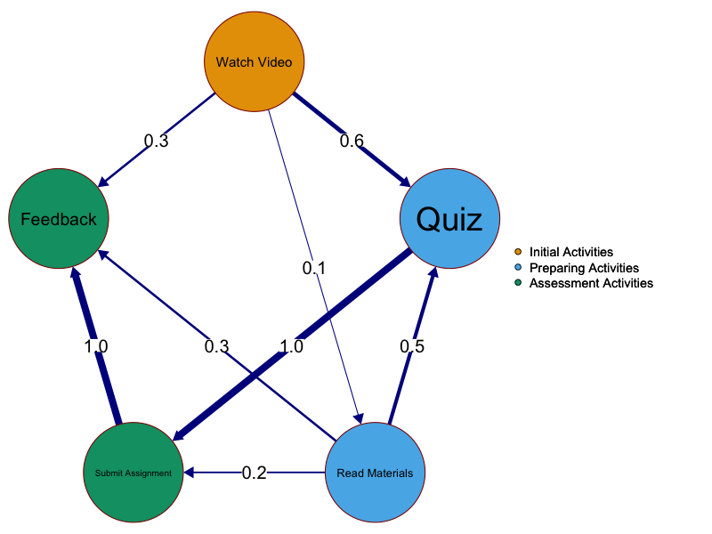
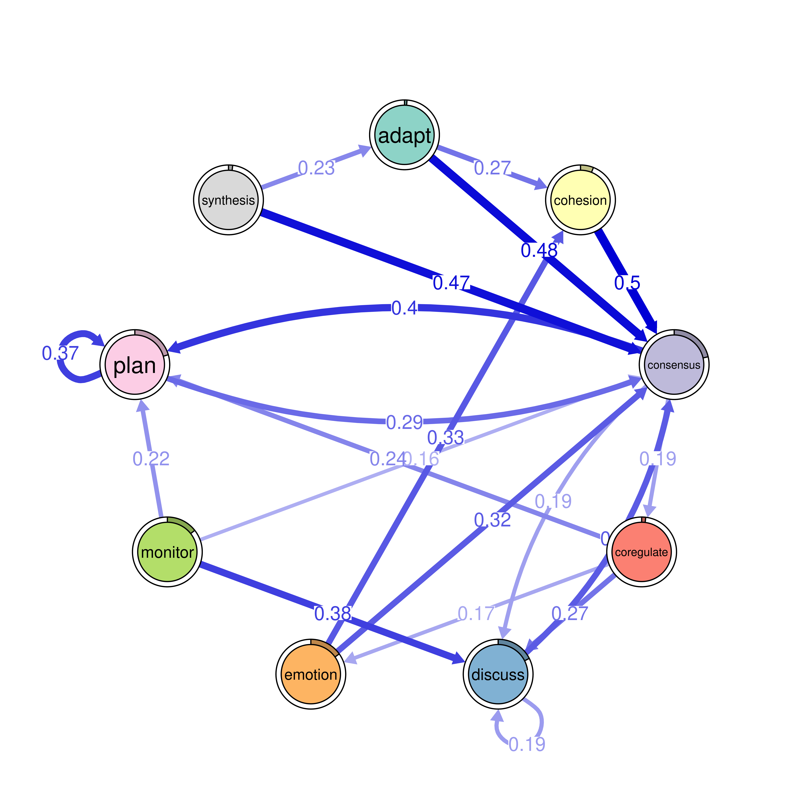
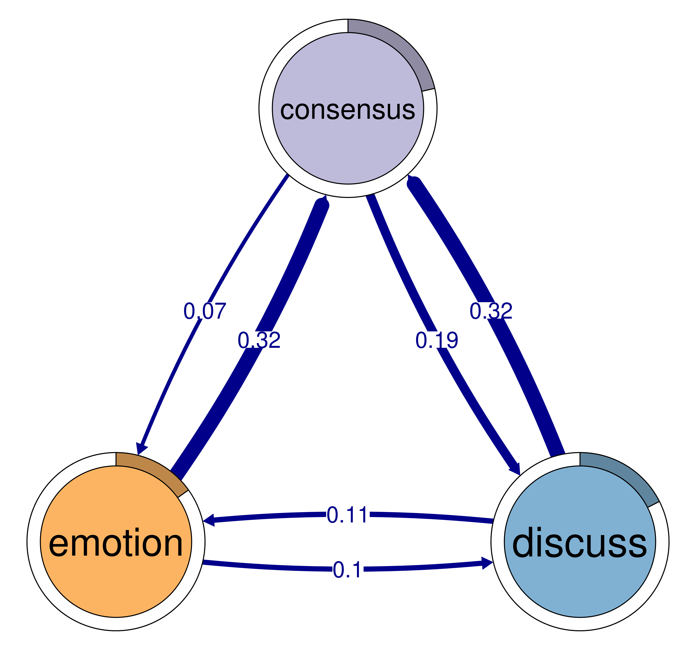
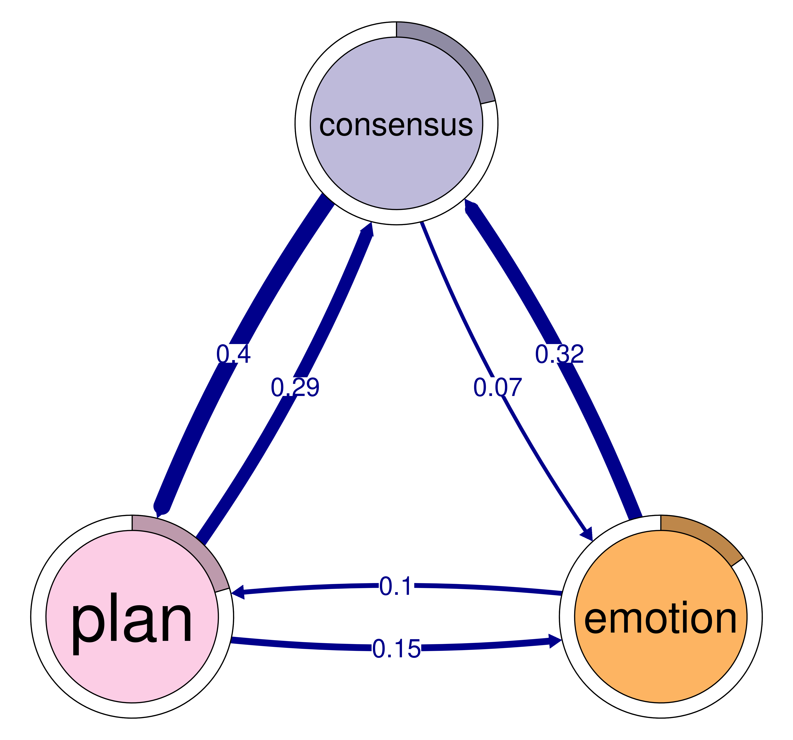
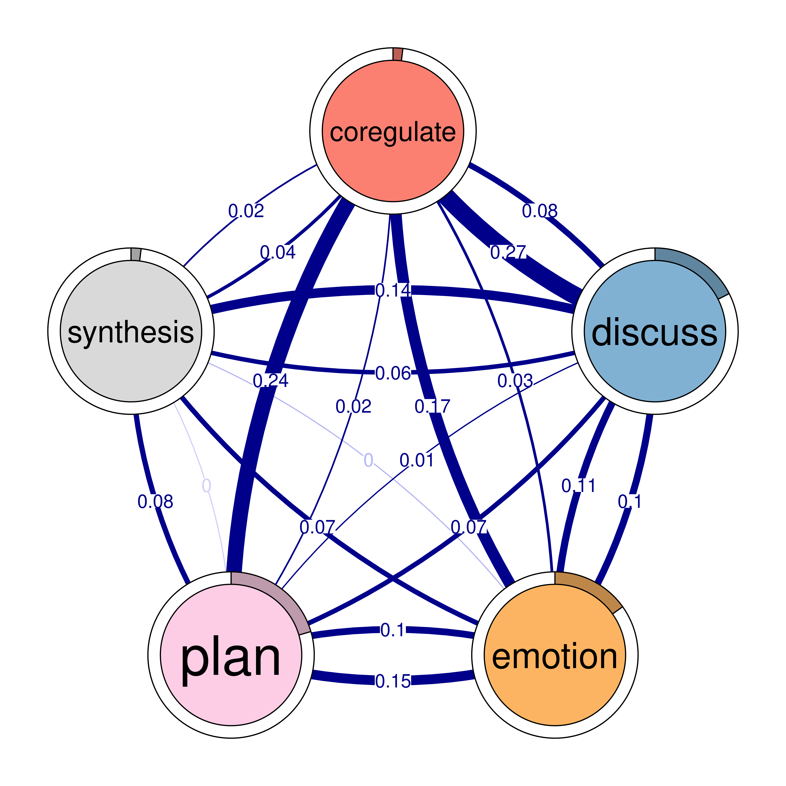
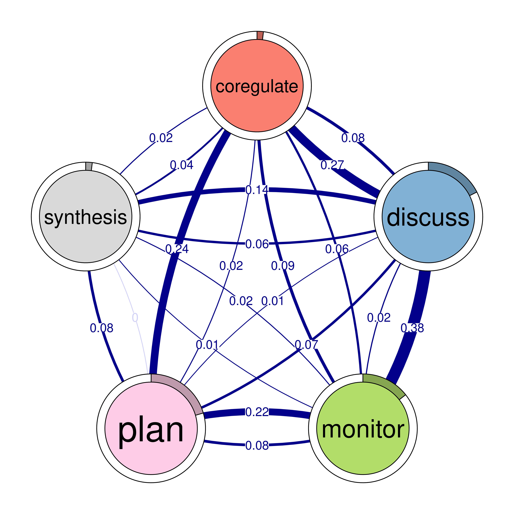
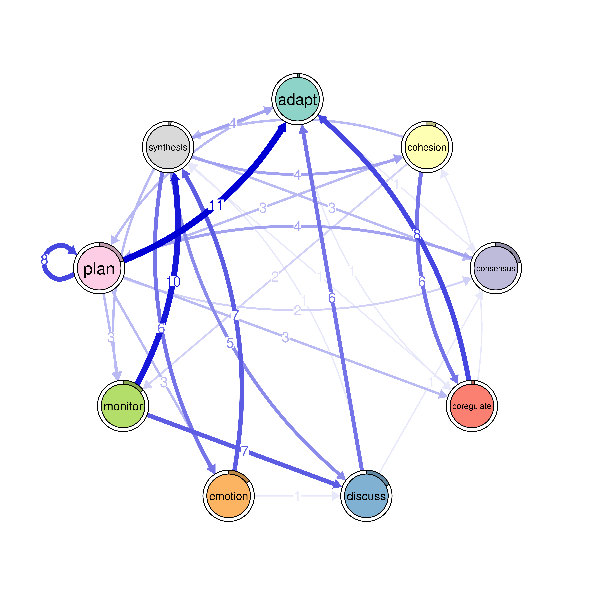
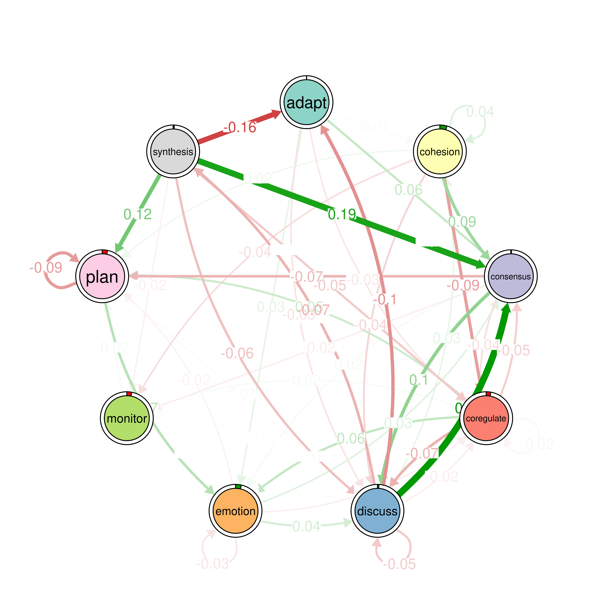

model <- tna(group_regulation)
print(model)15 Mapping Relational Dynamics with Transition Network Analysis: A Primer and Tutorial
Abstract
This chapter presents Transition Network Analysis (TNA) that captures the full breadth of the relational dynamics of a temporal process. TNA models transitions between events as a weighted directed network. In doing so, TNA brings the wealth of network analysis to the modeled process which include graph, node and edge level metrics. TNA also enables the detection of recurring patterns such as dyads or triads, and communities and clusters. More importantly, TNA allows researchers to statistically validate the findings using bootstrapping, permutation, and case dropping techniques to verify if and when the research conclusions are correct. Furthermore, TNA allows researchers to include covariates that would explain why certain patterns emerge or examine the differences across subgroups. Such statistical rigor that brings validation and hypothesis testing at each step of the analysis offers a method for researchers to build, verify and advance existing theories and develop new ones on the basis of a robust scientific approach. This chapter offers a step-by-step tutorial using the tna R package, illustrating all the TNA features in a case study about group regulation.
1 Introduction
As a concept, transition networks were proposed in the seventies by the pioneering work of Schnakenberg [1]. More recently, they have become more recognized across several fields to harness their potentials for capturing the relational and temporal dynamic systems [3]. Nevertheless, despite the needs and potential, they have not been visible in education. In this chapter, we introduce transition network analysis (TNA) as a novel method that captures the temporal and relational aspects of an unfolding process. The main principle of TNA is representing the transition matrix between events as a graph to take full advantage of graph theory potentials and the wealth of potential of network analysis [4, 5].
Think of it as a combination of process mining and network analysis where a process map is represented and analyzed by network analysis—but of course, TNA is far richer than this. In TNA, network analysis is applied to capture the structure, time and relationships in a holistic way. For process mining models, TNA adds network measures at the node, edge and graph level which tells us what events were important (centrality measures), what transitions were central (edge centralities), and which processes are more connected (e.g., graph density) [6]. TNA also adds community finding as well as pattern mining e.g., triads and dyads to capture patterns within the process. For network analysis, TNA brings clustering of sub-networks or different network constellations of typical temporal events which is commonly referred to as tactics. Furthermore, TNA can model covariates to explain certain patterns which is not a common method in network analysis (note that co-variates are not covered in this chapter) [6]. Furthermore, TNA offers far more than a combination of either methods and includes several innovative techniques of its own which include edge verification using bootstrapping and network comparison with permutation, as well as centrality verification through case-dropping. These statistical techniques bring rigor and validation at each edge level, so we can now be sure which edge is likely to replicate in the future and that our inferences and models are valid and not just a chance [4, 5].
2 Why TNA?
Learning is a process that can be best conceptualized as a complex dynamic system [7–9]. Such a system is a collection of interconnected components that interact over time, where interactions can enhance, impede, amplify, or reinforce each other [10]. These dynamic interactions lead to the emergence of behaviors that cannot be fully understood by analyzing individual components in isolation. Often, the interactions result in processes that are more than the simple sum of their parts which is referred to as non-linear dynamics [7, 8] (see Figure 15.1). For instance, motivation catalyzes achievement which in turn catalyzes more engagement, enjoyment and motivation. These interdependence, feedback loops and non-linear dynamics are inherently complex and therefore, require a modeling method that goes beyond the traditional linear models which assume that relationships between processes are stable and predictable [7]. TNA as a dynamic probabilistic model, offers a solution that captures the uncertainties through directional probabilities between learning events and accommodates the non-linear, evolving nature of learning processes. It also captures the constellations or the emergent patterns that define or shape the learning process [3].

Probabilistic processes are commonly —and indeed best— represented mathematically as matrices, where rows represent nodes and columns denote direct probabilistic interactions between them [11, 12]. Moreover, matrices are the mathematical foundation of networks [11]. Therefore, matrices and networks, particularly probabilistic networks, are a natural fit that are conceptually and mathematically aligned. As such, using network models to represent probabilistic processes has become a very common practice [12]. For instance, several probabilistic network disciplines have recently become popular e.g., psychological networks. Also, similar to TNA, similar probabilistic directed transition models have been proposed and empirically validated in various fields such as Markovian network models and dynamic network models from Markov process data [1–3].
Despite TNA demonstrated fit and alignment, an integrated framework that takes advantage of transition data, their relational and temporal interactions and the mathematical potential of matrix representations—as TNA does—has not been fully embraced or extended within educational research. TNA as an approach, not only aligns with established practices in other disciplines but also enhances the analytics repertoire for researchers by giving the power and interpretability to complex educational data and contributing to theory and rigor [4].
3 The theoretical grounding of TNA
TNA uses stochastic process modeling to capture the dynamics of the learning process, namely, Markov models [2]. Markov models align well with the view that the learning process is an outcome of a stochastic data generating process that led to the overall configuration of the process that we observe [13–15]. The data-generating process is what produces various network configurations or patterns based on rules, constraints, or guiding principles—for instance, self-regulation. This means that while the system operates within certain boundaries defined by the framework or principle, the specific ways in which it changes or evolves is rather random and therefore can’t be strictly determined [6, 14]. That is, the transitions are governed by a stochastic process. The stochastic nature of changes introduces variability, making the system’s precise future states unpredictable but statistically describable [14].
Therefore, to capture the data generating process and given that the data generating process is partly random (i.e., stochastic), it can be statistically modeled using probability theory [3, 12, 14]. That is, a method that assumes that events are probabilistically dependent on the preceding ones like Markov models. This view has been entertained by several theorists across the years who described such stochastic process e.g,.[13–15]. For instance, Winne and Perry conceptualized the dynamics of self-regulation through three interconnected levels: occurrence, contingency, and patterns—that together depict how the learning process unfolds [15].
Occurrences are states, events or actions, such as discussion moves or parts of learning tasks or any learning activity a student makes during learning. Occurrences are the building blocks of the learning process, the events and the elements that make up the full structure. Occurrences are represented as nodes in TNA.
Contingencies represent the sequential dependency or possibility of transitions between events and how certain actions lead to or follow others. For example, after a learner reads a note on a particular topic, she reviews those notes (another occurrences). Contingency is the recording of the transition event or the transition probability when the student moves between two events. This contingency is represented as edges in TNA.
Patterns are the recurring combinations of occurrences and contingencies that emerge throughout the learning process. Patterns represent consistent behaviors that typify a learner’s approach to studying or learning. For instance, a pattern might show that a student repeatedly engages in self-evaluation after studying a lesson (contingency). According to Winne [16], “researchers assume mental operations generate behavior, and those cognitive and meta cognitive events are what theories seek to account for” (p. 272). In other words, patterns are the hall mark of the data generation process and the backbone of the structure. After all, a learning process is made of several units, some of which are prominent and repetitive giving it the shape and form it is.
4 The building blocks of TNA
The building blocks of TNA are the transitions between events that makes up the transition process. A transition is a conditional relationship between an occurrence and another occurrence, from A \(\rightarrow\) B (or a contingency) [3, 15]. TNA models these transition in sequential data to compute the transition probability between events [2, 3].The result is a transition matrix that is represented as a weighted directed network where the weights are the transition probabilities from an event to the other and the direction represents the direction of these transitions [2, 3].
Let us see an example of an imaginary transition matrix representing students learning process. We have five learning activities or occurrences (e.g., Watch Video, Quiz, Read Materials, Submit Assignment, and Feedback). The contingencies are the transitions between these occurrences or the probability of a student moving from one activity to another. We can see that transitioning from Watch Video to Quiz occurred 60 out of 100 times which gives us an estimated probability of 0.60 to move from Watch Video to Quiz (or contingency) (Table 15.1). We also see each time a student starts a quiz, they did Submit Assignment which represents an estimated probability of 1 (Figure 15.2).
| From | To | Frequency |
|---|---|---|
| Watch Video | Quiz | 60 |
| Watch Video | Read Materials | 10 |
| Quiz | Submit Assignment | 100 |
| Read Materials | Submit Assignment | 20 |
| Read Materials | Feedback | 30 |
| Read Materials | Quiz | 50 |
| Submit Assignment | Feedback | 100 |
| Watch Video | Feedback | 30 |

In the example, we can see patterns as they emerge when students consistently repeat a behavior, these patterns typify their approach to studying or managing learning tasks. For instance, a repeated pattern of moving from Read Materials to Quiz reveals a strategy of preparing with taking quizzes before attempting assignments. We also see another pattern of transitioning from Submit assignment to Feedback which reflects meta-cognitive self-evaluation. It is also evident that Feedback receives most transitions (has high in-strength centrality) which makes it the central event in the learning process (sum of estimated transition probabilities = \(1 + 0.3 + 0.3\)) and that Submit assignment bridges connections to other events (has high betweenness centrality).
4.1 Network Representation
In TNA, the learning process is represented as a directed weighted network. This network can be described in the following way:
- Nodes (\(V\)): These represent the different learning events, such as watching a video, taking a quiz, or submitting an assignment. It can also be states, dialogue moves, roles in collaborative activity, motivation states or any event that can be represented as a sequence unit (occurrences).
- Edges (\(E\)): These represent the transitions between activities, showing the direction of transitioning from one activity to the next.
- Weights (\(W\)): Weights represent the probability of transitioning from an event or state to another (contingencies).
The building blocks of TNA are weighted edges that under-grid the structure and dynamics of the transition processes. The edges weight indicates the likelihood (possibility) of transition and the arrows reflects the direction of the transition. Let’s take some examples from our example network.
- From Watch Video to Quiz (\(v_1 \to v_2\), (\(W\) = 0.6): means that there is a directed edge from Watch Video (\(v_1\)) to Quiz (\(v_2\)), with a weight of 0.6. This means there is a 60% probability that students proceed to take the quiz after watching the video, making it a common next step.
- From Quiz to Submit Assignment (\(v_2 \to v_4\), (\(W\) = 1): means that there is a directed edge from Quiz (\(v_2\)) to Submit Assignment (\(v_4\)) with a weight of 1. This indicates that all students (\(100\%\)) are likely to move from completing a quiz directly to submitting an assignment. It may be because this is a mandatory progression, meaning every student follows this path.
- From Read Materials to Quiz (\(v_3 \to v_2\), (\(W\) = 0.5): means there is an edge from Read Materials (\(v_3\)) to Quiz (\(v_2\)) with a weight of 0.5. This signifies that there is 50% probability that students choose to take a quiz after reading materials, indicating that it is relatively common.
The TNA network \(G = (V, E, W)\) is thus composed of the nodes (\(V\)), the edges (\(E\)), and weights (\(W\)). The resulting directed weighted network \(G\) provides a complete view of the learning process, and shows how students navigate through different activities, which transitions are most probable, and which activities are important within the overall learning process.
4.2 Mathematical grounding of TNA
Given the stochastic nature of the learning process —as we assume it is the generating mechanism of the data—, TNA uses stochastic modelling (i.e., Markov models) [6, 12, 14]. Markov models mine the transition probabilities from sequences of activities by capturing the likelihood of moving from one state to the next as a probability [6, 11, 12]. For a given sequence of events, the transition probability \(P(v_j \mid v_i)\) is estimated from data as:
\[ \widehat{P(v_j \mid v_i)} = \frac{n(v_i \to v_j)}{\sum_{k=1}^S n(v_i \to v_k)} \]
where \(n(v_i \to v_j)\) is the count of observed transitions from state \(v_i\) to \(v_j\), and the denominator represents the total outgoing transitions from state \(v_i\) with \(S\) denoting the total number of states. If there are no transitions from \(v_i\), then the probability cannot be estimated. These estimated probabilities are assembled into a transition matrix \(T\), where each element \(T_{ij}\) represents the estimated probability of transitioning from \(v_i\) to \(v_j\). For example, the matrix of our example looks like this.
\[ T = \begin{pmatrix} 0 & 0.6 & 0.4 & 0 \\ 0 & 0 & 0.2 & 0.8 \\ 0.3 & 0.5 & 0 & 0.2 \\ 0 & 0 & 0 & 1 \end{pmatrix} \]
Matrices and networks together offer a seamless representation of probabilistic models, where transition matrices underpin the mathematical structure and graph theory methods provide the tools and foundations for the analysis.
4.3 TNA features
4.3.1 Visualization
Visualization of the TNA models allows researchers to get a bird’s-eye view of the learning process, capture the essence of the full structure, the connectivity of the events, identify important patterns, central learning events as well as how they are temporally related. Comparative plots (either by subtraction or permutation) allows researchers to understand the differences between groups of students—such as high-achieving versus low-achieving students or those in different contexts that may influence strategies or influence behavior [6, 11, 12, 17]
TNA offers powerful visualization features that rely on the qgraph package with several enhancements [18]. First, TNA graphs capture the full transition process in an intuitive network visualization with optimized layouts. Also, the ability to fix the layout across several plots allowing the comparison across several transition processes. Further, the visualization in TNA can accept other layouts from, e.g., the igraph package as well as any other custom designed layout (see qgraph manual for this) [19]. Furthermore, the versatility of qgraph allows researchers to add more information to the plot e.g., confidence intervals, thresholds and themes etc. The flexible and customization visualization options —as we will see later— offers researchers several possibilities of visualizing patterns (e.g., dyads and triads), communities and any custom configurations.
4.3.2 Network measures
Network measures provide important insights into the overall structure of the process (graph-level measures), the importance or the roles of the events (centrality measures) in the process as well as the centrality of transitions (edge centrality) [4, 11, 20]. TNA estimates many of these measures that are appropriately situated for the nature of the network (a probabilistic directed and weighted network).
4.3.2.1 Network-level measures
TNA offers several basic network measurements that start with the simple measures like node count which indicates the number of unique events or activities in the network and edge count which represent the number of unique directed transitions between these nodes. However, given that TNA networks may be fully connected or saturated (each node is connected to all other nodes), some measures may not be meaningful in such scenarios For instance, network density reflects how completely connected the network is, or the proportion of actual connections to all possible ones. In cases of fully connected networks, density is 1 and therefore, does not offer much information. However there are several other situations (non-connected networks, pruned networks, or bootstrapped models which will be discussed later) that network density will be useful in showing the network structure [4, 11]. Similarly, measures like the mean out-strength and in-strength which refer to the sum of transition probabilities of outgoing or incoming interactions to each node, respectively may need to be understood according to the network connectivity (fully saturated or not) [11].
Centralization (both out-degree and in-degree) measures how centralized the network is around particular nodes showing a dominant state, or event. These measures will show which events are at the center of the process, or whether an event or a state dominates the process [21]. Reciprocity measures the likelihood that two nodes have mutual connections, reflecting the mutuality of interactions. It may be important in some processes to examine their reciprocal interactions such as collaborative processes where we expect some stronger transitions between, e.g., argumentation and knowledge building [11, 22].
These measures together provide a concise overview of network connectivity, distribution, and flow of dynamics in the transition process. Notable to say that no existing process mining model includes or allows or operationalizes network measures to understand the learning process and therefore, all of such measures are among the strengths of TNA.
4.3.3 Node-level measures
Centrality measures provide a quantification of the role or importance of a state or an event in the process [21]. With centrality measures, researchers can rank events according to their value in, for instance, bridging the interactions (betweenness centrality) or receiving most transitions (in-strength centrality) [23]. In doing so, centrality measures can reveal which behaviors or cognitive states are central to the learning process, either as destinations of frequent transitions, as starting points for various actions, or as bridges between different learning activities or as a key to a spreading phenomenon. Using centrality measures, researchers can identify important events that can be targets for intervention or improvement [4, 11].
The choice of what centrality measure to apply depends heavily on the specific research [21]. From a probabilistic perspective, certain centrality measures reflect the inherent properties of how transitions are structured, specifically, out-strength centrality is consistently equal to 1 across all nodes, it means that the transition probabilities from each event always sum 1 [6]. Therefore, it is meaningless in some situations. However, in TNA networks where we delete insignificant edges and self-transitions, out-strength becomes useful and in that case reflects stability, lack of change (being stuck in a state) or repetitive actions [12].
It is also important to mention that in TNA, the raw or absolute values of centrality measures are not inherently meaningful on their own. It is the relative values of these measures that matter, allowing researchers to rank nodes and identify their relative importance or influence within the network [11]. This comparison helps determine which events are central, which nodes serve as key bridges, and which activities are most likely to receive transitions in the learning process. Last, it is important to note that not all centrality measures are directly transferable to TNA and researchers have to think how and why a measure makes sense in their own context [24, 25].
4.3.4 Edge-level measures
In TNA, edge centrality measures quantify the importance of transitions between events, rather than the importance of the events themselves, they provide insights into how critical a particular transition is in to the flow of transitions or interactions in the process [19]. In particular, betweenness centrality of an edge, for example, measures how often a transition bridges other transitions. In doing so, edge centrality measures help researchers understand not just which nodes are important, but which transitions are important in guiding the learning process and maintaining the integrity of the sequence of activities.
4.3.5 Patterns
Patterns represent the fundamental building blocks of the structure and dynamics of the learning process. As we discussed before, patterns provide insights into, e.g., the behavior and strategies that learners use while studying or interacting with learning materials [4, 16, 20]. Furthermore, capturing repeated consistent patterns allows us to build theories and generalizable inferences [15]. For instance, if we repeatedly found a strong pattern of transition between planning and task enactment in project work and this pattern is associated with project success, we can therefore recommend such approach [26]. We can also design to strengthen such pattern and monitor students when doing it or support them. On the functionality side, TNA allows the identification of several patterns: cliques (dyads and triads and other cliques) and communities. A network clique is a subset of nodes in a graph where every pair of nodes is directly connected to each other by and edge. In network terms, cliques represent tightly-knit communities or groups, closely related entities or systems or interdependent nodes that shape how learning unfolds over time [4] .
4.3.6 Cliques: Dyads
A dyad is the simplest pattern in TNA representing a transition between two nodes. A dyad becomes interesting when it is a mutual dyad (bidirectional) and when the edge weights are high, e.g., more than 0.15 in either direction. Strong mutual dyads (henceforth dyads for brevity) indicate the strong interdependence between states or events that they are recurrently occurring. Analyzing dyads helps to identify important sequences, recurrent or consistent transitional patterns of learning behavior or strategies. For instance, consistently moving from reading materials to taking a quiz indicating a strong self-evaluative strategy. A student commonly transitioning between disengagement and engagement indicates instability and problematic approach. On the overall picture (Figure 15.3 -left), dyads are the backbone of the whole process and the constellation of dyads help characterize and describe the full process.

4.3.7 Cliques: Triads
Triads represent connections between three nodes capturing more complex relationships that go beyond direct transitions. In graph theory, the constellation of three nodes carries a very central position and hence multiple names and configurations (triples, triads, triangles). In TNA, cliques of three nodes where each node is connected to the others in either direction indicates a strong interdependent subgroup of nodes that form a strong core of the process. Triads represent higher-order dependencies in learning behavior where one activity not only follows another but influence or depends subsequent events. For instance, the triad in the example above (Figure 15.3 - right) shows strong temporal interdependence between studying, revising and planning reflecting a well-managed approached to learning. The analysis of triads is particularly important in TNA, as it can highlight the presence of reciprocal or reinforcing relationships, where learning activities form a cohesive structure that encourages repeated engagement [4] .
4.3.8 Communities
Communities are groups of nodes that are more closely related or densely interconnected together more than to other nodes in the network. Specifically, in TNA, communities are groups of states or events that frequently transition between one-another or share similar dynamics [27]. Also, communities are cohesive sequences or succession of activities that are more likely to co-occur together, has a typical pathways or recurring behaviors. Unlike cliques, which have a fixed or predefined structure (2-clique or 3-clique), communities are data-driven based on the connectivity patterns in the data which makes them more descriptive of real-world structure [11]. In doing so, communities reveal existing structures, unravel typical configurations or constellations or actually mine them from the learning process. Communities are not strictly fully connected but show higher-than-average connectivity where the grouping indicates a higher level of association and interaction compared to the broader network [27].
In the context of TNA, communities can be groups of dialogue moves, utterances, or states, or learning events that are more densely connected with each other or follow each other. Identifying communities help uncover these —the latent or hidden— clusters of related interactions or behaviors during the learning process showing e.g., how learners collaborate or self-regulate or approach their learning. For instance, in a collaborative learning scenario, communities might form around self-evaluative utterances, feedback exchanges, or task-enactment dialogue moves. Identifying these clusters provides insight into common regulatory practices or patterns of interaction that contribute to effective collaboration and learning [24].
Furthermore, identifying communities of behavior or events in TNA can contribute or advance our theory building and consequently understanding of learning. Think of identifying communities of behavior as uncovering latent variables. These communities represent underlying patterns of interaction inferred from densely connected behaviors into a simplified, meaningful structure suggesting the presence of an underlying construct or a behavioral mechanism that generated such a pattern. This data-driven approach helps provide evidence of existing constructs, concepts or validating existing ones. As such, identifying communities can help refine theoretical models or develop new ones or help discover and describe the dynamics of behavior. Using communities of inter-related events or factors to infer constructs or theoretical models has been an established tradition in several fields, e.g., factor analysis, network modeling or semantic networks [4, 21, 24, 28].
4.3.9 Clusters
Clusters represent typical transition networks that recur together across time [24, 29]. Unlike communities, clusters involve the entire network where groups of states or events are similarly interconnected and each exhibit a distinct transition pattern (latent or hidden) with its own set of transition probabilities [6]. This means that clusters capture the dynamics in learning behaviors, revealing typical relations that learners frequently adopt as units across different instances. Identifying clusters of behavior is a very common approach in learning analytics under several names or labels, e.g., tactics, clusters, or strategies. Here, clusters are similar to those in the sequence mining literature where temporal patterns are inferred from the data to reveal typical behavioral approaches [30–32]. Clusters will be discussed in a devoted chapter [24].
4.3.10 Sub-networks or network comparison
Oftentimes, we encounter two predefined conditions, such as high versus low achievers, or different course types (e.g., practical versus theoretical, or easy task versus demanding task). In that case, we have two different processes that are defined by their context (not clustered or inferred). Comparing such groups has been commonly performed visually, e.g., comparing two process models, sequence models, or epistemic networks [30, 33]. While visual comparison may show and inform about differences, it does not tell us about how statistically significant these different are. Where exactly the differences are statistically significant and where they are not. TNA offers a rigorous systematic method for process comparison based on permutation. In doing so, we can compare models visually, plot the differences and estimate the significance of each and every edge. Having such a rigorous comparison opens the door for researchers to draw meaningful inferences, identify theoretically significant differences, and refine our understanding of learning processes in various contexts. This statistical rigor enhances the validity of our findings and contributes to the development of more nuanced theories and conceptual frameworks [34].
4.3.11 Bootstrapping and model validation
Most research on networks or process mining uses descriptive methods. The validation or the statistical significance of such models are almost absent in the literature. Having validated models allows us to assess the robustness and reproducibility of our models to ensure that the insights we get are not merely a product of chance and are therefore generalizable.
TNA offers an important methodological advancement by incorporating bootstrap methods to identify significant edges within the TNA networks [20]. Bootstrapping is a re-sampling technique that entails repeatedly —usually hundreds if not thousands of times— drawing samples from the original dataset with replacement to estimate the model for each of these samples [35, 36]. Bootstrapping does not require strong assumptions regarding the distribution of the data which makes it suitable for analyzing process data which often do not adhere to specific distributions [37]. Given that bootstrapping entails replacement, each bootstrap sample may include multiple copies of some observations while excluding others to assess variability in the estimated parameters. When edges consistently appear across the majority of the estimated models, they are considered stable and significant [37]. In doing so, bootstrapping helps effectively filters out small, negligible or spurious edges resulting in a stable model and valid model [35, 36].
Another advantage of bootstrapping is that it can effectively prune dense networks. This because one of the challenges of most probabilistic networks like TNA is that they are commonly fully connected and lack sparsity (i.e., meaning that every possible connection between nodes (events or states) is present to some degree [12, 35]. This is a common issue in most probabilistic networks [35]. Bootstrapping can help mitigate this issue through identifying and eliminating small and uncertain edges to effectively retrieve the backbone of the network. The resulting simplified network is easier to interpret and more likely to be generalizable. The integration of bootstrap methods into TNA represents a significant advancement in the validation of process models that has the potential to improve the quality of the models but also contributes to more effective data-driven theory building in education.
The bootstrap function in TNA allows for the calculation of confidence intervals and p-values for each edge weight. This level of statistical rigor provides a quantifiable measure of uncertainty and robustness for each transition in the network. Bootstrapping also help exclude transitions that may not represent true relationships within the data to include only the most meaningful interactions. The resulting process models may offer an empirical assessment for existing constructs and concepts, as well as in validating or refining hypothesis. A systematically rigorous model also allows researchers to uncover patterns and relationships that either support current theoretical frameworks or advance others .
5 Tutorial of TNA with R
TNA can analyse any data that can be represented as a sequence which has transitions or changes across time. In other words, TNA accepts any categorically ordered event data, e.g., sequence of learning events, states, phases, roles, dialogue moves or interactions to mention a few. This data can come from time-stamped learning management system data, coded interactions data, event-log data or order event data. The data can be in stslist format (sequence object), which is typically created using the seqdef() function from the TraMineR package. In addition, tna accepts wide data format data where each row represents sequence of data and each column is a time point.
The analysis in this chapter uses the tna R package and other packages that are necessary for data manipulation and plotting [38]. It is assumed that the reader is familiar with the R programming language. If that is not the case, it is recommended to refer to previous tutorials on the basics of R [39], data cleaning [40], basic statistics [41], and visualization [42]. It is also recommended to have previous knowledge about Markov models [6].
In the first step of the analysis, we begin by loading the necessary packages. We will use tidyverse for data manipulation, wrangling, and ensuring the data is clean and organized for analysis [43]. Most importantly, we load the tna package which provides a wide array of functions for estimating, visualizing and manipulating tna models [38]. Besides loading the required libraries, the next code chunk also loads the data that we are going to use throughout the tutorial, which is a built-in dataset in the tna package (group_regulation) and represents interactions between groups of learners trying to regulate their learning based on the data in this study [4].
5.1 Building tna Model
TNA analysis starts by building the main TNA object which is called model. A model contains all the information necessary for further analysis e.g., plotting, estimation of centralities, or comparison. To estimate a TNA model we use the function tna() with one argument which is a stslist object (sequence object) usually created by the seqdef() function of TraMiner. However, the tna package can also process event data with the prepare_data() function to first convert such data into a proper format. Furthermore, tna() also accepts standard data frames in wide format (to learn how to create a sequence object you may need to refer to this chapter [29]). The function estimates a Markov model from the data where the initial and transition probabilities are estimated directly from the observed initial state probabilities and transition frequencies. The TNA model is structured as a list containing the elements that facilitate the analysis of transition networks, these elements are described below:
Initial Probabilities (
inits): These define the likelihood of starting in a particular state at the beginning of the process (at the first time point before any transitions happen). In an educational context, an initial probability represents the probability that a student begins in a specific state (such as “engaged” or “motivated”) before any activities or interventions occur. These probabilities provide a snapshot of where students start within the process and help frame the subsequent transitions.Transition Probabilities (
weights): These describe the likelihood of moving from one state to another at each step in the process. Transition probabilities capture how students transitions, moves or follows between different learning states (engaged, motivated or achiever) or events (e.g., assessment, reading or submission).Labels (
labels): The descriptive names for each node in the network and is included to enhance the interpretability of the analysis. The labels are automatically retrieved from the alphabet of the sequence object or the categories in the data frame.Data (
data): This is a version of the sequence data (or data frame) that contains all the necessary sequence data, converted into an internal format used by thetnapackage for further analysis (permutation, bootstrapping, etc.).
Together these elements for the basis for analysis and visualization. In the example above we see the TNA network plot with transition probabilities as directed edge weights and the initial probability as the pie (the thin ring around the nodes). In particular, we see video has an initial probability of 1 and all other events have an initial probability of 0. You can use print(model) to get a feel of what it has and how is it structured.
State Labels
adapt, cohesion, consensus, coregulate, discuss, emotion, monitor, plan, synthesis
Transition Probability Matrix
adapt cohesion consensus coregulate discuss emotion monitor plan synthesis
adapt 0.00000 0.273 0.477 0.022 0.059 0.120 0.033 0.016 0.0000
cohesion 0.00295 0.027 0.498 0.119 0.060 0.116 0.033 0.141 0.0035
consensus 0.00474 0.015 0.082 0.188 0.188 0.073 0.047 0.396 0.0076
[ reached getOption("max.print") -- omitted 6 rows ]
Initial Probabilities
adapt cohesion consensus coregulate discuss emotion monitor plan synthesis
0.011 0.060 0.214 0.019 0.175 0.151 0.144 0.204 0.019 5.2 Plotting and interpreting tna models
The next step is to plot the model, and in TNA it is as easy as creating the model. We can just call the function plot and pass the model argument to it plot(model). The plot is a directed weighted network where nodes take the colors and the labels retrieved from the sequence object (if available). Each node (state or event or a learning activity) is represented as a circle. For instance, we see nodes for adapt, cohesion, coregulate in the network as well as six other nodes. Around each node, there is a thin rim (pie) that represents the initial probability (inits) of starting in this state.
For instance, students are more likely to start in planning more than any other state (initial probability of 0.21) and showing as a pie proportional to 0.21 of the circle. We also see, that adapt has very small pie (initial probability of 0.01) which makes sense that adapt follows other actions.
The arrows from each node to the other node represent the weighted transition probability and the direction of the transition. For instance, we see that there is a strong transition from adapt to understand with a probability of 0.51 and from adapt to cohesion with a probability of 0.27. We can also see loops, which represent the probability of staying in the same state, or repeating the same event again in the next time point.
5.2.1 Interpretation of the model
The model plot reveals the dynamics of self-regulated learning and co-regulation among students. We start with the initial events, where students usually begin with planning (0.20), consensus (0.21), or discussing (0.18). Students are less likely to start with some states such as coregulate (0.019), synthesis (0.02), and adapt (0.012). These smaller initial probabilities suggest that these activities are less common starting points and shows students priorities in their regulation.
Task-related processes such as planning and discussing are central in the network. The transition probabilities reveal that these processes are interconnected in various ways, reflecting the configuration of the self-regulated group interactions. Notably, transitions to consensus are particularly strong, with significant transitions from adapt (0.48) and cohesion (0.50). This indicates that adaptability and social cohesion are crucial for reaching consensus. The transition from consensus to coregulate (0.19) suggests that achieving agreement often leads to collaborative regulation.
Emotional engagement plays a significant role students’ bonding and collaboration, as evidenced by the strong transition from emotion to cohesion (0.33). This highlights how emotions can facilitate social interactions and collaborative dynamics. The transition from cohesion to adapt (0.27) shows the role of social interaction in adaptability. Monitoring is another important regulatory process with notable transitions to plan (0.22) and discuss (0.38). This suggests that self-assessment prompts both further planning and discussion, essential for effective self-regulation. The transition from discussing to co-regulate (0.27) indicates that discussions often lead to collaborative regulation, further supported by the transition from co-regulate to monitor (0.09), demonstrating the cyclical nature of self-regulated learning.
Overall, the network reveals a rich interplay between cognitive and emotional processes, emphasizing task enactment and socio-emotional regulation. Understanding these transitions can help educators develop strategies to support learners.
The code below visualizes the network model (Figure 15.4). Given that using plot(model) produces a very dense and hard to read model we will set two parameters:
- Minimum Edge Weight (
minimum = 0.05): Only edges with a weight of 0.05 or higher will be included in the plot. - Cut-Off Threshold (
cut = 0.1): Edges with a weight below 0.1 are entirely shown with lighter color.
plot(model)
plot(model, minimum = 0.05, cut = 0.1)

5.2.2 Pruning and retaining edges that “matter”
Transition networks are commonly fully connected —or saturated— where almost all nodes have connections to all other nodes with some probability. Therefore, mechanisms are needed to retrieve the core or backbone structure of the network. In other words, to make the network sparse. Network sparsity enhances interpretability by removing the overly complex structures, making it easier to identify the important components and relationships. It also isolates the signal from the noise by removing the small noisy edges that may obscure meaningful patterns allowing researchers to focus on the important interactions. We can use the minimum argument in TNA plots to remove small edges e.g., below 0.05 (visually) for easier reading and interpretability as we did before. Worth noting that these small probabilities are retained in the model for all further computations. Researchers may be interested in removing edges that are small and negligible in weight or pruning the model. Removing these small edges keep only the strong connections or transitions that are worthy and meaningful. In a network like ours, we have 81 edges and it is hard to take into account all of them.
In TNA, small edges can be removed using the prune() function which removes edges using a user-specified method via the method argument. With the "threshold" method, edges are removed below a certain threshold value (the default is 0.05 which removes edges below 0.05). The "lowest" method deletes the lowest percentile of edges for instance, lowest = 0.1 removes all edges in the lower 10th percentile in terms of edge weights. When using these methods, the prune() function makes sure that it does not disconnect the network, if it finds that the removal of one edge disconnects the network, it retains it to keep the network connected.
Another theoretically sound method is to remove edges using a network null model. While several null models exists for non-weighted networks, only a few can be reliable in weighted networks like transition networks. TNA implements the Disparity Filter which is a robust network sparsification algorithm that helps extracts the backbone structure of weighted networks [44]. The disparity filter simplifies the network by discarding weak edge that are lower than a pre-defined alpha level. The values of alpha ranges from 0.05 (roughly statistically significant compared to a random model), to 0.5 (more likely to than chance). Values of 0.05 are very restrictive and removes most edges in the network, therefore, for the case of pruning TNA models, it is advisable to use the default 0.5 levels which simply means that these edges are more likely to have resulted from a learning process rather than by chance. Values of 0.05 maybe used in larger networks or in cases of theory building and could possibly be interpreted that these structure are likely to be repeated or reproducible in future scenarios. Applying the disparity filter to the TNA model is simple and can be applied using the "disparity" method in prune() with the model as argument. The code in the next chunk does three all types of pruning in TNA (Figure 15.5):
Threshold: Directly removes edges with weights below 0.15, offering a straightforward cutoff approach.
Lowest Percentage: Removes the bottom 15% of edges when sorted by weight, focusing on relative edge importance.
Disparity Filter: Uses a different statistical approach (significance level \(\alpha\) = 0.5) to identify significant edges based on the network’s topology.
Pruning with tna can also be carried out by bootstrapping, which we will demonstrate later.
# Pruning with different methods (using comparable parameters)
pruned_threshold <- prune(model, method = "threshold", threshold = 0.15)
pruned_lowest <- prune(model, method = "lowest", lowest = 0.15)
pruned_disparity <- prune(model, method = "disparity", level = 0.5)
# Plotting for comparison
plot(pruned_threshold)
plot(pruned_lowest)
plot(pruned_disparity)
plot(model, minimum = 0.05, cut = 0.1)


5.3 Patterns
Patterns can be helpful to understand behavior, identify significant structures and help describe the process as detailed above. TNA supports identifying several types of patterns that can be expressed as n-clique. The cliques() function is designed to identify and visualize n-cliques from a TNA model. The function cliques() returns the number of cliques found, their respective matrices, while also allowing the user to visualize the cliques. Users can also pass custom visualization options e.g., edge, node sizes, color or layout. The arguments of cliques include the TNA model, size for specifying the size of cliques, so setting size = 2 would find all dyads and setting size = 3 would find all triads and so forth. The threshold argument sets the lowest weight for which an edge is considered part of the clique.
The sum_weights argument can be set to determine whether the sum of edge weights should be considered when forming cliques for instance, threshold = 0.1 and sum_weights = FALSE means that the edge has to have 0.1 weight in either direction. In contrast, threshold = 0.1 and sum_weights = TRUE means, that the sum of the weights in either direction has to be 0.1 regardless of individual edge weights.
The dyads below are a list of the strong interdependent dyads. The triads show the strong well-connected structures or patterns. We do not recommend looking at 4 or 5 cliques routinely but, of course, researchers could customize based on context.
In this code, four different calls to the cliques function are made to identify and visualize cliques of varying sizes (with size values of 2, 3, 4, and 5) from a network model named model. Each function call focuses on a different size of cliques, using a specific weight threshold to determine which edges are considered strong enough to form part of a clique. The show_loops argument to plot controls whether self-loops (edges connecting a node to itself) should be displayed in the visual output, but loops are never included in the actual computation of cliques.
The first function call identifies cliques of size 2, known as dyads (Figure 16.5), using a weight threshold of 0.1. This means only pairs of nodes that are connected by edges with with transitions weights higher than 0.1 are considered. The second function identifies 3-cliques (Figure 15.7), or triads, using a weight threshold of 0.05 which captures the three fully connected nodes in the network. The third call focuses on 4-node cliques, or quadruples (Figure 15.8), with a lower weight threshold of 0.03. Finally, the fourth call identifies 5-cliques, or quintuples (Figure 15.9), with a weight threshold of 0.1. In this case, the sum_weights = TRUE option means that the sum of the edge weights in both directions between nodes is considered.
# Identify 2-cliques (dyads) from the TNA model, excluding loops in the visualization
# A clique of size 2 is essentially a pair of connected nodes
cliques_of_two <- cliques(
model,
size = 2,
threshold = 0.1 # Only consider edges with weight > 0.1
)
print(cliques_of_two)Number of 2-cliques: 5 (weight threshold = 0.1)
Showing 5 cliques starting from clique number 1
Clique 1:
consensus coregulate
consensus 0.082 0.188
coregulate 0.135 0.023
Clique 2:
consensus plan
consensus 0.082 0.40
plan 0.290 0.37
Clique 3:
discuss emotion
discuss 0.19 0.106
emotion 0.10 0.077
Clique 4:
consensus discuss
consensus 0.082 0.19
discuss 0.321 0.19
Clique 5:
cohesion emotion
cohesion 0.027 0.116
emotion 0.325 0.077plot(cliques_of_two)


# Identify 3-cliques (triads) from the TNA_Model
# A clique of size 3 means a fully connected triplet of nodes
cliques_of_three <- cliques(
model,
size = 3,
threshold = 0.05 # Only consider edges with weight > 0.05
)
print(cliques_of_three)Number of 3-cliques: 3 (weight threshold = 0.05)
Showing 3 cliques starting from clique number 1
Clique 1:
consensus discuss emotion
consensus 0.082 0.19 0.073
discuss 0.321 0.19 0.106
emotion 0.320 0.10 0.077
Clique 2:
consensus emotion plan
consensus 0.082 0.073 0.40
emotion 0.320 0.077 0.10
plan 0.290 0.147 0.37
Clique 3:
consensus coregulate discuss
consensus 0.082 0.188 0.19
coregulate 0.135 0.023 0.27
discuss 0.321 0.084 0.19plot(cliques_of_three)


# Identify 4-cliques (quadruples) from the TNA_Model
# A clique of size 4 means four nodes that are all mutually connected
cliques_of_four <- cliques(
model,
size = 4,
threshold = 0.03 # Only consider edges with weight > 0.03
)
print(cliques_of_four)Number of 4-cliques: 5 (weight threshold = 0.03)
Showing 5 cliques starting from clique number 1
Clique 1:
consensus emotion monitor plan
consensus 0.082 0.073 0.047 0.40
emotion 0.320 0.077 0.036 0.10
monitor 0.159 0.091 0.018 0.22
plan 0.290 0.147 0.076 0.37
Clique 2:
cohesion coregulate discuss emotion
cohesion 0.027 0.119 0.06 0.116
coregulate 0.036 0.023 0.27 0.172
discuss 0.048 0.084 0.19 0.106
emotion 0.325 0.034 0.10 0.077
Clique 3:
consensus coregulate discuss emotion
consensus 0.082 0.188 0.19 0.073
coregulate 0.135 0.023 0.27 0.172
discuss 0.321 0.084 0.19 0.106
emotion 0.320 0.034 0.10 0.077
Clique 4:
cohesion coregulate emotion monitor
cohesion 0.027 0.119 0.116 0.033
coregulate 0.036 0.023 0.172 0.086
emotion 0.325 0.034 0.077 0.036
monitor 0.056 0.058 0.091 0.018
Clique 5:
consensus coregulate emotion monitor
consensus 0.082 0.188 0.073 0.047
coregulate 0.135 0.023 0.172 0.086
emotion 0.320 0.034 0.077 0.036
monitor 0.159 0.058 0.091 0.018plot(cliques_of_four)


# Identify 5-cliques (quintuples) from the TNA_Model, summing edge weights
# Here, the sum of both directions of an edge must meet the threshold
cliques_of_five <- cliques(
model,
size = 5,
threshold = 0.015, # Consider edge weights greater than 0.1
sum_weights = TRUE # Sum edge weights in both directions when evaluating thresholds
)
print(cliques_of_five)Number of 5-cliques: 126 (weight threshold = 0.015)
Showing 6 cliques starting from clique number 1
Clique 1:
discuss emotion monitor plan synthesis
discuss 0.195 0.106 0.022 0.012 0.1410
emotion 0.102 0.077 0.036 0.100 0.0028
monitor 0.375 0.091 0.018 0.216 0.0161
plan 0.068 0.147 0.076 0.374 0.0018
synthesis 0.063 0.071 0.012 0.075 0.0000
Clique 2:
coregulate discuss emotion monitor plan
coregulate 0.023 0.274 0.172 0.086 0.239
discuss 0.084 0.195 0.106 0.022 0.012
emotion 0.034 0.102 0.077 0.036 0.100
monitor 0.058 0.375 0.091 0.018 0.216
plan 0.017 0.068 0.147 0.076 0.374
Clique 3:
coregulate discuss emotion monitor synthesis
coregulate 0.023 0.274 0.172 0.086 0.0188
discuss 0.084 0.195 0.106 0.022 0.1410
emotion 0.034 0.102 0.077 0.036 0.0028
monitor 0.058 0.375 0.091 0.018 0.0161
synthesis 0.044 0.063 0.071 0.012 0.0000
Clique 4:
coregulate discuss emotion plan synthesis
coregulate 0.023 0.274 0.172 0.239 0.0188
discuss 0.084 0.195 0.106 0.012 0.1410
emotion 0.034 0.102 0.077 0.100 0.0028
plan 0.017 0.068 0.147 0.374 0.0018
synthesis 0.044 0.063 0.071 0.075 0.0000
Clique 5:
coregulate discuss monitor plan synthesis
coregulate 0.023 0.274 0.086 0.239 0.0188
discuss 0.084 0.195 0.022 0.012 0.1410
monitor 0.058 0.375 0.018 0.216 0.0161
plan 0.017 0.068 0.076 0.374 0.0018
synthesis 0.044 0.063 0.012 0.075 0.0000
Clique 6:
coregulate emotion monitor plan synthesis
coregulate 0.023 0.172 0.086 0.239 0.0188
emotion 0.034 0.077 0.036 0.100 0.0028
monitor 0.058 0.091 0.018 0.216 0.0161
plan 0.017 0.147 0.076 0.374 0.0018
synthesis 0.044 0.071 0.012 0.075 0.0000plot(cliques_of_five)





5.3.1 Centralities
5.3.1.1 Node-level measures
Centrality measures are important in identifying the important events, rank their value in certain processes. The tna package has a built-in function centralities() to compute centralities using the appropriate algorithm for a directed probabilistic process. The computation of centralities is simple with just passing the model object (model) to the function. By default, centralities() removes loops from the calculations which can be changed by the user by setting loops=TRUE. Removing the loops would entail that all computation of centralities will be performed without considering self-transitioning or staying in the same state. In that context, out-strength will mean stability of a state, the higher out-strength centrality, the more stable the state is as it less likely to transition to other states and vice versa. In our context, for example, students use adapt (out-strength = 1), means they always follow it by other processes. Whereas, plan has the lowest out-strength = 0.63, meaning that students may repeat planning steps several times before moving on. Please note, that out-strength centrality with loops = TRUE will always be 1 and therefore, will be meaningless to compute in non-pruned networks. In-strength centrality reflects the sum of received transitions and indicates the node is a common pathway that states end in.
In our example, we see that consensus task received most transitions from other events (in-strength = 2.7). Betweenness centrality (based on randomized shortest paths, RSP) reflects the events that mediate or bridge other transitions. Please note, that in tna it is advisable to consider the Betweenness RSP as it is more appropriate for probabilistic networks. In our example, adapt lied between most other transitions The function also computes several other centrality measures but we won’t discuss them one by one here. Researchers can use ?centralities to read the list of possible options. The default ones are shown in Figure 15.10.
# Compute centrality measures for the TNA model
Centralities <- centralities(model)
# Visualize the centrality measures
plot(Centralities)
Furthermore, given that each TNA model can be converted to an igraph object, researchers can compute other centralities if they so wish. In the next code, we compute the hub and authority centralities.
# Calculate hub scores and the authority scores for the network
hits_scores <- igraph::hits_scores(as.igraph(model))
hub_scores <- hits_scores$hub
authority_scores <- hits_scores$authority
# Print the calculated hub and authority scores for further analysis
print(hub_scores)
print(authority_scores) adapt cohesion consensus coregulate discuss emotion monitor plan synthesis
0.96 1.00 0.65 0.69 0.74 0.82 0.74 0.87 0.90 adapt cohesion consensus coregulate discuss emotion monitor plan synthesis
0.122 0.301 1.000 0.195 0.439 0.333 0.122 0.511 0.059 5.3.1.2 Edge-level measures
TNA can also compute edge level measures which would would rank edges according to their importance in the transition model or which transitions bridges other processes. We can do this by using the function betweenness_network which creates a network with betweenness centrality as edges (Figure 15.11).
Edge_betweeness <- betweenness_network(model)
plot(Edge_betweeness)
5.3.2 Community finding
Community detection identifies groups of nodes (states, events or actions) that exhibit strong interconnections within the transition process [27]. Unlike the cliques, communities are identified algorithmically, and can be of any size. Therefore, it could offer a more realistic way of grouping similarly inter-connected transitions. TNA offers several community detection algorithms that are suited for transition networks (usually small, weighted and directed networks). Each of these algorithms offers a unique perspective to the grouping [19].
The walktrap algorithm detects tightly-knit groups of transitions based on random walks on the graph. It assumes that random walks will frequently stay within the same community before transitioning to another. finding smaller, cohesive communities within the network.
The Fast Greedy algorithm detects communities by optimizing modularity where the algorithm begins with each node in its community and merges nodes based on increases in modularity until no further improvements are possible.
Infomap detects communities by optimizing a flow-based model that captures how information moves through the network.
The Edge Betweenness algorithm focuses on the edges (transitions) in the network rather than the nodes by measuring how many shortest paths uses this transition. Edges with high betweenness are removed iteratively to reveal communities. This method is useful in TNA for uncovering transitions that act as bridges between different learning behaviors.
The Spin Glass algorithm tries to find communities with strong internal connections and weak external connections.
The code below identifies and then visualizes community structures within a tna network model. It begins by using the communities() function with the model argument to detect communities. The result is stored in the communities object. Next, the code visualizes these communities using the plot() function, specifying the leading_eigen method for community detection (Figure 17.3). Other algorithms can be specified in the same way, for example to use the spinglass algorithm we could pass the argument method = "spinglass". Furthermore, the communities object contains the number of communities by each algorithm and the communities assignment.
communities <- communities(model)
print(communities)Number of communities found by each algorithm:
walktrap fast_greedy label_prop infomap edge_betweenness
1 3 1 1 1
leading_eigen spinglass
3 2
Community assignments:
node walktrap fast_greedy label_prop infomap edge_betweenness leading_eigen spinglass
1 adapt 1 1 1 1 1 1 1
2 cohesion 1 1 1 1 1 1 1
3 consensus 1 1 1 1 1 2 1
[ reached 'max' / getOption("max.print") -- omitted 6 rows ]communities <- communities(model)
plot(communities, method = "leading_eigen")
leading_eigen algorithm5.4 Network inference
5.4.1 Bootstrapping
Bootstrapping is a robust technique for validating edge weight accuracy and stability and consequently the model as a whole. Through bootstrapping, researchers can verify each edge, determine their statistical significance, and obtain a confidence interval for the transition probabilities. Bootstrapping is performed by repeatedly re-sampling the original data and creating new datasets. The new datasets (bootstrap samples) are created by randomly selecting data points (individual sequences in the case of sequence data) with replacement, meaning that some data points may appear multiple times in a sample while others may not appear at all [37]. For each bootstrap sample, the TNA network is recalculated, which involves recalculating the edge weight. This process is repeated many times (typically 1000), generating an empirical distribution of edge weight for each edge. As such, we compare the original edge weight to the distribution of edge weights across bootstrap samples and compute confidence intervals (CIs) for each edge. In this context, a 95% confidence interval means that the true edge weight falls within 95% of such intervals in repeated studies.
Bootstrapping also provides a p-value for edge significance by assessing how often a given edge appears with a weight significantly different from a chosen threshold value. Bootstrapping can therefore allow researchers to verify each edge (how likely a given edge would appear in future replications of the network structure) and also, the whole TNA network robustness i.e., if the network’s key features (e.g., important nodes or edges) remain consistent across re-sampled datasets, it suggests the network is robust and reliable. Therefore, we can test or verify hypothesis or advance an existing one. To carry out bootstrapping, we use the bootstrap() function with the model as an argument. The function has default value of 1000 bootstrap iterations (argument iter), and a higher number of iterations is of course better, but 1000 is often sufficient. We choose a threshold value of 0.05 to compare our bootstrapped transition probabilities via the argument threshold. This means that if we consistently observe that an edge is above this threshold in the bootstrapped samples, we deem it statistically significant.
This code below performs bootstrapping using using the bootstrap() function, with a seed = 265 for reproducibility. After the bootstrapping process, we can print a summary of the results showing relevant significance values for each edge in the network (CI and p-values). The result object also contains several other elements:
weights_orig: The original transition matrix of the TNA modelweights_sig: A matrix showing only statistically significant transitions (other weights are set to zero).weights_mean: The mean transition matrix across all bootstrap samples.weights_sd: The standard deviation matrix across all bootstrap samples.ci_lower: The lower bound matrix of the bootstrap confidence intervals for transitions.ci_upper: The upper bound matrix of the bootstrap confidence intervals for transitions.p_values: A matrix of bootstrap p-values for each transitionsummary: Adata.framecontaining the p-values, edge weights and the CIs for each edge in the network.
Then we print specifically those edges that we found to be non-significant by the bootstrap (p-value greater than 0.05), offering insights into the stability of the network structure.
# Perform bootstrapping on the TNA model with a fixed seed for reproducibility
set.seed(265)
boot <- bootstrap(model, threshold = 0.05)
# Print a summary of the bootstrap results
print(summary(boot)) from to weight p_value sig ci_lower ci_upper
2 adapt cohesion 0.0029 1 FALSE 0.00059 0.0054
3 adapt consensus 0.0047 1 FALSE 0.00313 0.0065
4 adapt coregulate 0.0162 1 FALSE 0.01078 0.0222
5 adapt discuss 0.0714 0 TRUE 0.06370 0.0795
[ reached 'max' / getOption("max.print") -- omitted 74 rows ]# Show the non-significant edges (p-value >= 0.05 in this case)
# These are edges that are less likely to be stable across bootstrap samples
print(boot, type = "nonsig")Non-significant Edges
from to weight p_value ci_lower ci_upper
2 adapt cohesion 0.0029 1 0.00059 0.0054
3 adapt consensus 0.0047 1 0.00313 0.0065
4 adapt coregulate 0.0162 1 0.01078 0.0222
6 adapt emotion 0.0025 1 0.00071 0.0044
7 adapt monitor 0.0112 1 0.00621 0.0172
[ reached 'max' / getOption("max.print") -- omitted 31 rows ]5.4.2 Permutation
TNA uses advanced statistical methods to compare models and determine if the differences between them are statistically meaningful. A straightforward but less precise way is to look at the raw differences in edge weights between models. This method can give a quick visual comparison, but it doesn’t provide the statistical rigor needed to confirm that these differences aren’t just due to random chance.
To tackle this issue, TNA uses a more rigorous approach through permutation. Permutation involves the generation of a distribution of differences by repeatedly shuffling and comparing the data. For each edge, the test provides a p-value, which helps researchers identify statistically significant differences. This rigorous approach ensures that the insights gained from TNA are not merely artifacts of chance but reflect true underlying differences. No other statistical method that offers such rigor in comparison of groups.
Let’s look at an example using TNA to compare the transition networks of high achievers and low achievers with data from the group_regulation dataset. First, we create two separate TNA models—one for high achievers and one for low achievers. Then, we use the plot_compare() function to plot a simple comparison between these models, which just subtracts the edge weights without assessing statistical significance (Figure 15.13 (a)).
To determine the statistical significance of the differences between the two models, a permutation test is performed using the permutation_test() function. The measures="Betweenness" argument specifies that the test also should compute the differences in betweenness centrality. The results of the permutation test are then plotted using the plot() function, which displays the significant differences between the transition networks of high-achievers and low-achievers (Figure 15.13 (b)). Finally, we can use the print() function to print the results of the permutation test or just print specific parts of the results, like the significantly different edges, or centralities.
# Create TNA for the high-achievers subset (rows 1 to 1000)
Hi <- tna(group_regulation[1:1000, ])
# Create TNA for the low-achievers subset (rows 1001 to 2000)
Lo <- tna(group_regulation[1001:2000, ])
# Plot a comparison of the "Hi" and "Lo" models
# The 'minimum' parameter is set to 0.001, so edges with weights >= 0.001 are shown
plot_compare(Hi, Lo, minimum = 0.01)
# Run a permutation test to determine statistical significance of differences
# between "Hi" and "Lo"
# The 'iter' argument is set to 1000, meaning 1000 permutations are performed
Permutation <- permutation_test(Hi, Lo, iter = 1000, measures = "Betweenness")
# Plot the significant differences identified in the permutation test
plot(Permutation, minimum = 0.01)

print(Permutation$edges$stats) edge_name diff_true p_value
1 adapt -> adapt 0.00000 1.000
2 cohesion -> adapt 0.00533 0.060
3 consensus -> adapt -0.00132 0.411
4 coregulate -> adapt 0.01122 0.047
5 discuss -> adapt -0.09616 0.000
6 emotion -> adapt 0.00167 0.459
7 monitor -> adapt -0.00019 0.943
8 plan -> adapt 0.00077 0.220
9 synthesis -> adapt -0.15825 0.000
10 adapt -> cohesion -0.01476 0.749
[ reached 'max' / getOption("max.print") -- omitted 71 rows ]print(Permutation$centralities$stats) State Centrality diff_true p_value
1 adapt Betweenness -9 0.220
2 cohesion Betweenness 1 0.314
3 consensus Betweenness 0 1.000
4 coregulate Betweenness 3 0.322
5 discuss Betweenness 2 0.005
6 emotion Betweenness 0 1.000
7 monitor Betweenness -6 0.083
[ reached 'max' / getOption("max.print") -- omitted 2 rows ]5.4.3 Estimating the stability of centralities
While most centrality calculation methods in traditional network analysis has no statistical method to verify their strength or reliability, TNA introduces a statistical method, the case-dropping bootstrap which is a technique to estimate the stability of centrality measures in networks. The “case-dropping” — as the name implies — refers to systematically removing a subset of observations or nodes from the network, recalculating the centrality indices each time, and then evaluating how much these recalculated values correlate with the original ones. This helps determine the correlation-stability of centrality measures. This technique allows us to assess whether the centrality indices are robust and not overly sensitive to slight variations in the network data. A high correlation-stability coefficient indicates that the centrality indices are robust, meaning they remain relatively consistent and the identified key nodes are reliably central in the network. Conversely, if the correlation coefficients vary widely or are consistently low, it indicates that the results may not be dependable.
The correlation-stability coefficients are useful for several reasons. Firstly, they emphasize the reliability of findings by ensuring that the identified influential nodes are not artifacts of a particular dataset or influenced by random variations. Secondly, they improve the generalizability of the results, as stable centrality measures are more likely to reflect underlying patterns that persist across different samples or conditions.
5.4.4 Interpreting the Results of the Case-Dropping Bootstrap for Centrality Indices
The case-dropping bootstrap results in a series of correlation coefficients that represent the relationship between the centrality measures in the original network and those in the networks with data removed. These coefficients typically range from -1 to 1, where values closer to 1 indicate a strong positive correlation, meaning the centrality rankings remain consistent even when data is omitted. A high average coefficient (e.g., above 0.7) suggests that the centrality measure is stable and reliable; the nodes identified as most central in the original network remain central even when some data are missing. This stability implies that findings about the importance of certain nodes are robust and not heavily influenced by specific data points. If the average correlation coefficient is moderate (e.g., between 0.5 and 0.7), it indicates that there is some variability in the centrality measures when data is removed, however it is still acceptable. A low average correlation coefficient (e.g., below 0.5) points to instability in the centrality measure and the results may not be reliable. This instability could stem from a small sample size or measurement errors in the data. It’s also important to compare the stability of different centrality measures. For example, degree centrality often shows higher stability because it relies on direct connections, whereas betweenness centrality may be less stable due to its dependence on the shortest paths, which can change significantly with the removal of edges or nodes.
The code below assesses the centrality stability of centrality measures using the function named estimate_centrality_stability() (a shorthand alias estimate_cs() is also provided) which takes the model as the main argument. The results can be plotted in the usual way (Figure 16.10).
Centrality_stability <- estimate_centrality_stability(model, detailed = FALSE)
plot(Centrality_stability)
6 Conclusions
This chapter introduced Transition Network Analysis (TNA) as a novel methodological framework that models the temporal dynamics of the learning process. TNA provides a theoretically grounded approach to modeling the stochastic nature of learning processes. This aligns with established theoretical frameworks, such as Winne and Perry’s conceptualization of self-regulated learning through occurrences, contingencies, and patterns. TNA operationalizes these theoretical constructs through its network representation, allowing researchers to empirically investigate theoretical propositions about learning dynamics. The method’s ability to identify communities, clusters, and recurring patterns offers new opportunities for theory building in educational research. Thus, TNA can help researchers validate existing theoretical constructs through data-driven pattern identification, discover new behavioral mechanisms and learning strategies, develop more nuanced understanding of how different learning activities interconnect, and identify critical transition points that may serve as targets for intervention.
In a way, TNA can be thought of as combining the temporal aspects of process mining with the analytical power of network theory to offer researchers a robust tool for understanding the complex dynamics of learning processes. The use of graph representation enhances PM by enabling researchers to examine the role of specific events in shaping learning processes through centrality measures. For example, measures such as betweenness centrality highlight nodes that bridge transitions, while in-degree centrality identifies events that receive the most transitions. Edge-level centralities provide further insights into the underlying dynamics of transitions, offering a deeper understanding of how learning unfolds. These measures and capabilities are hardly present in process mining with some exceptions like fuzzy miner, yet they are rather few, incomplete and not easy to interpret [45]. Also, TNA employs community detection to explore events that co-occur, revealing patterns that reflect behaviors and strategies. On the other hand, PM enhances network analysis by enabling the identification of clusters representing typical transition patterns, which are widely used to capture students’ tactics and strategies. However, TNA offers more than combination of either methods. The incorporation of bootstrapping provides a rigorous way to assess model stability and filter out unreliable connections. Similarly, permutation and case-dropping for assessing statistical inferences of models.
A significant contribution of TNA is its incorporation of robust statistical validation techniques. The implementation of bootstrapping methods addresses a critical gap in current process mining and network analysis approaches in education. This advancement enables identification of significant transitions through confidence intervals and p-values, helps filter out spurious connections leading to more reliable models, provides a framework for assessing the generalizability of findings, and supports more rigorous hypothesis testing and theory validation. Furthermore, TNA’s ability to systematically compare different learning processes through permutation testing represents a methodological advance over simple visual comparison. Permutation allows researchers to identify statistically significant differences between learning processes across different contexts.
However, several limitations should be considered when applying TNA. The method assumes Markovian properties, which may not fully capture some aspects of learning processes (refer to [25] for a frequency-based approach). Interpretation of network measures requires careful consideration of the educational context, and the approach may be computationally intensive for very large datasets. Additionally, some network measures may not be meaningful in fully connected networks. Future research should focus on developing additional validation techniques specific to educational contexts, extending the method to handle multi-level and longitudinal data, investigating the integration of TNA with other analytical approaches, creating user-friendly tools and guidelines for educational practitioners, and exploring applications in different educational domains and contexts.
References
1.
Schnakenberg J (1976) Network theory of microscopic and macroscopic behavior of master equation systems. Reviews of Modern Physics 48:571–85. https://doi.org/10.1103/revmodphys.48.571
2.
Nicolis G, Cantú AG, Nicolis C (2005) Dynamical aspects of interaction networks. International Journal of Bifurcation and Chaos in Applied Sciences and Engineering 15:3467–80. https://doi.org/10.1142/s0218127405014167
3.
Zou Y, Donner RV, Marwan N, Donges JF, Kurths J (2019) Complex network approaches to nonlinear time series analysis. Physics Reports 787:1–97. https://doi.org/10.1016/j.physrep.2018.10.005
4.
Saqr M, López-Pernas S, Törmänen T, Kaliisa R, Misiejuk K, Tikka S (2024) Transition network analysis: A novel framework for modeling, visualizing, and identifying the temporal patterns of learners and learning processes. https://doi.org/10.48550/ARXIV.2411.15486
5.
Saqr M, López-Pernas S, Törmänen T, Kaliisa R, Misiejuk K, Tikka S (2024) Transition network analysis: A novel framework for modeling, visualizing, and identifying the temporal patterns of learners and learning processes. https://doi.org/10.48550/arXiv.2411.15486
6.
Helske J, Helske S, Saqr M, López-Pernas S, Murphy K (2024) A modern approach to transition analysis and process mining with markov models in education. In: Springer nature switzerland. pp 381–427
7.
Hilpert JC, Marchand GC (2018) Complex systems research in educational psychology: Aligning theory and method. Educational Psychologist 53:185–202. https://doi.org/10.1080/00461520.2018.1469411
8.
Kaplan A, Garner JK (2020) Steps for applying the complex dynamical systems approach in educational research: A guide for the perplexed scholar. Journal of Experimental Education 88:486–502. https://doi.org/10.1080/00220973.2020.1745738
9.
Saqr M, Schreuder MJ, López-Pernas S (2024) Why educational research needs a complex system revolution that embraces individual differences, heterogeneity, and uncertainty. In: Saqr M, López-Pernas S (eds) Learning analytics methods and tutorials: A practical guide using r. Springer Nature Switzerland, pp 723–34
10.
Saqr M, López-Pernas S (2024) Mapping the self in self‐regulation using complex dynamic systems approach. British Journal of Educational Technology: Journal of the Council for Educational Technology. https://doi.org/10.1111/bjet.13452
11.
Newman M (2018) Networks, 2nd ed. Oxford University Press, London, England
12.
Koller D, Friedman N (2009) Probabilistic graphical models: Principles and techniques. MIT Press
13.
Reimann P (2009) Time is precious: Variable- and event-centred approaches to process analysis in CSCL research. International Journal of Computer-Supported Collaborative Learning 4:239–57. https://doi.org/10.1007/s11412-009-9070-z
14.
Reimann P (2019) Methodological progress in the study of self-regulated learning enables theory advancement. Learning and Instruction 72:101269. https://doi.org/10.1016/j.learninstruc.2019.101269
15.
Winne PH, Perry NE (2000) Measuring self-regulated learning. In: Handbook of self-regulation. pp 531–66
16.
Winne PH (2010) Improving Measurements of Self-Regulated Learning. Educational Psychologist 45:267–276. https://doi.org/10.1080/00461520.2010.517150
17.
Borgatti SP, Mehra A, Brass DJ, Labianca G (2009) Network analysis in the social sciences. Science 323:892–95. https://doi.org/10.1126/science.1165821
18.
Epskamp S, Cramer AOJ, Waldorp LJ, Schmittmann VD, Borsboom D (2012) Qgraph: Network visualizations of relationships in psychometric data. Journal of Statistical Software 48: https://doi.org/10.18637/jss.v048.i04
19.
Csardi G, Nepusz T (2006) The igraph software package for complex network research. InterJournal Complex Sy:1695
20.
Saqr M, Peeters W (2022) Temporal networks in collaborative learning: A case study. British Journal of Educational Technology 53:1283–1303. https://doi.org/10.1111/bjet.13187
21.
Saqr M, López-Pernas S, Conde-González MÁ, Hernández-García Á (2024) Social Network Analysis: A Primer, a Guide and a Tutorial in R. Springer Nature Switzerland, pp 491–518
22.
Saqr M, Nouri J, Vartiainen H, Tedre M (2020) Robustness and rich clubs in collaborative learning groups: a learning analytics study using network science. Scientific Reports 10: https://doi.org/10.1038/s41598-020-71483-z
23.
Saqr M, Elmoazen R, Tedre M, López-Pernas S, Hirsto L (2022) How well centrality measures capture student achievement in computer-supported collaborative learning? A systematic review and meta-analysis. Educational Research Review 35:100437. https://doi.org/10.1016/j.edurev.2022.100437
24.
López-Pernas S, Tikka S, Saqr M (2025) Mining patterns and clusters with transition network analysis: A heterogeneity approach. In: Saqr M, López-Pernas S (eds) Advanced learning analytics methods: AI, precision and complexity. Springer Nature Switzerland, Cham
25.
Saqr M, López-Pernas S, Tikka S (2025) Capturing the breadth and dynamics of the temporal processes with frequency transition network analysis: A primer and tutorial. In: Saqr M, López-Pernas S (eds) Advanced learning analytics methods: AI, precision and complexity. Springer Nature Switzerland, Cham
26.
Malmberg J, Saqr M, Järvenoja H, Järvelä S (2022) How the monitoring events of individual students are associated with phases of regulation. Journal of Learning Analytics 9:77–92. https://doi.org/10.18608/jla.2022.7429
27.
Hernández-García Á, Cuenca-Enrique C, Traxler A, López-Pernas S, Conde-González MÁ, Saqr M (2024) Community Detection in Learning Networks Using R. Springer Nature Switzerland, pp 519–540
28.
Epskamp S, Rhemtulla M, Borsboom D (2017) Generalized Network Psychometrics: Combining Network and Latent Variable Models. Psychometrika 82:904–927. https://doi.org/10.1007/s11336-017-9557-x
29.
Saqr M, López-Pernas S, Helske S, Durand M, Murphy K, Studer M, Ritschard G (2024) Sequence Analysis in Education: Principles, Technique, and Tutorial with R. Springer Nature Switzerland, pp 321–354
30.
Saint J, Gašević D, Matcha W, Uzir NA, Pardo A (2020) Combining analytic methods to unlock sequential and temporal patterns of self-regulated learning. Proceedings of the Tenth International Conference on Learning Analytics & Knowledge 402–411. https://doi.org/10.1145/3375462.3375487
31.
Saqr M, López-Pernas S, Jovanović J, Gašević D (2023) Intense, turbulent, or wallowing in the mire: A longitudinal study of cross-course online tactics, strategies, and trajectories. The Internet and Higher Education 57:100902. https://doi.org/10.1016/j.iheduc.2022.100902
32.
Fan Y, Matcha W, Uzir NA, Wang Q, Gaševic D (2021) Learning analytics to reveal links between learning design and self-regulated learning. International Journal of Artificial Intelligence in Education 31:980–1021
33.
Elmoazen R, Saqr M, Tedre M, Hirsto L (2022) A systematic literature review of empirical research on epistemic network analysis in education. IEEE Access 10:17330–17348. https://doi.org/10.1109/access.2022.3149812
34.
Borkulo CD van, Bork R van, Boschloo L, Kossakowski JJ, Tio P, Schoevers RA, Borsboom D, Waldorp LJ (2023) Comparing network structures on three aspects: A permutation test. Psychological Methods 28:1273–1285. https://doi.org/10.1037/met0000476
35.
Epskamp S, Borsboom D, Fried EI (2017) Estimating psychological networks and their accuracy: A tutorial paper. Behavior Research Methods 50:195–212. https://doi.org/10.3758/s13428-017-0862-1
36.
(2021) Network analysis of multivariate data in psychological science. Nature Reviews Methods Primers 1: https://doi.org/10.1038/s43586-021-00060-z
37.
AA, Mooney CZ, Duval RD (1994) Bootstrapping: A nonparametric approach to statistical inference. Journal of the American Statistical Association 89:1150. https://doi.org/10.2307/2290969
38.
López-Pernas S, Saqr M, Tikka S (2024) tna : An R package for transition network analysis
39.
Tikka S, Kopra J, Heinäniemi M, López-Pernas S, Saqr M (2024) Getting started with R for education research. In: Saqr M, López-Pernas S (eds) Learning analytics methods and tutorials: A practical guide using r. Springer, pp in–press
40.
Kopra J, Tikka S, Heinäniemi M, López-Pernas S, Saqr M (2024) An R approach to data cleaning and wrangling for education research. In: Saqr M, López-Pernas S (eds) Learning analytics methods and tutorials: A practical guide using r. Springer, pp in–press
41.
Tikka S, Kopra J, Heinäniemi M, López-Pernas S, Saqr M (2024) Introductory statistics with R for educational researchers. In: Saqr M, López-Pernas S (eds) Learning analytics methods and tutorials: A practical guide using r. Springer, pp in–press
42.
López-Pernas S, Misiejuk K, Tikka S, Kopra J, Heinäniemi M, Saqr M (2024) Visualizing and reporting educational data with R. In: Learning analytics methods and tutorials. Springer Nature Switzerland, Cham, pp 151–194
43.
Wickham H, Averick M, Bryan J, Chang W, McGowan LD, François R, Grolemund G, Hayes A, Henry L, Hester J, Kuhn M, Pedersen TL, Miller E, Bache SM, Müller K, Ooms J, Robinson D, Seidel DP, Spinu V, Takahashi K, Vaughan D, Wilke C, Woo K, Yutani H (2019) Welcome to the tidyverse. Journal of Open Source Software 4:1686. https://doi.org/10.21105/joss.01686
44.
Neal ZP (2022) backbone: An R package to extract network backbones. PLOS ONE 17:e0269137. https://doi.org/10.1371/journal.pone.0269137
45.
Pan Y, Zhang L (2021) Automated process discovery from event logs in BIM construction projects. Automation in Construction 127:103713. https://doi.org/10.1016/j.autcon.2021.103713